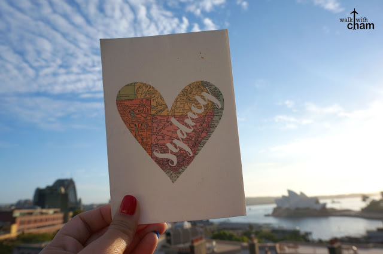

Things to do in Sydney, Australia
10.1.2018
Going to Sydney was merely a dream. A kind of dream I never thought would ever happen because I knew how expensive it was to score an airfare ticket and how difficult it was to get an Australian Visa. Although I already bought seat sale tickets via Cebu Pacific last year, I was still in denial since I had to wait for our visas to be processed. But after the long wait, when I finally got a hold of our visas (which was just sent via email btw) everything began to sink in. I was going to SYNDEY AUSTRALIA! And Mike and I were not just headed to a new country but also a new continent. Hurraaaay! We were both indeed blessed #thankyouLord
Note: This article doesn’t include the guide to the usual spots like KLCC and Batu Caves!

Just beside the Sydney Opera House is another famous Sydney attraction. The Sydney Harbour bridge connects Sydney CBD with the North Shore. People can also climb the bridge for that ultimate unique Sydney experience.
For beach bums, head over to Bondi Beach and learn to surf or you can just lounge by the shore together with tons of other sun worshippers around. You can also opt to visit the Icebergs and swim at their iconic pool or try dining at their restaurant.
There is no better way to ride a harbor ferry than by going to Manly Beach. You will be greeted by all the shops at the Corso then you can take a dip at the beach or maybe, just maybe your partner might pop the question you've long been waiting for (just like what happened to me)